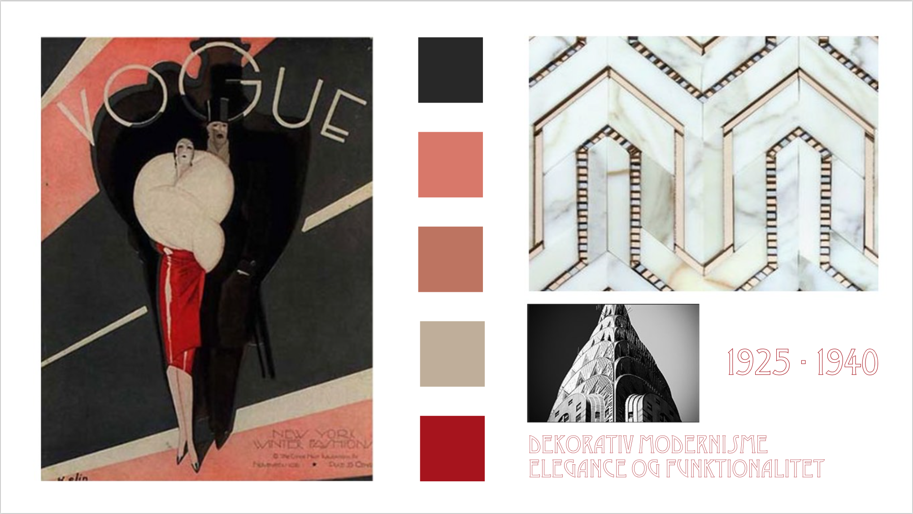
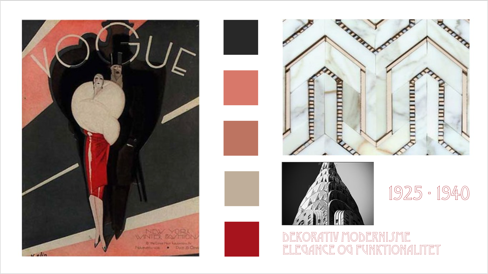

Til mit website skulle jeg designe et ikon samt splashbillede. Ikonet skulle designes i tre forskellige størrelser, hvor det mindste skulle bruges som favicon. Mit splashbillede udformede jeg i photoshop. I den forbindelse lærte vi også om farveteori og den kreative proces. Mit silartsite skulle designes til fem forskellige udgaver – derfor lavede jeg mediaqueries til henholdsvis laptop, tablet (portrait/landscape) og mobile (portrait/landscape). Til at styre alle de forskellige elementer på websitet har jeg brugt flexbox. Mit ikon og splashbillede kan ses i min procesdokumention.
Processen:
I starten af projektet fik vi som sagt tildelt en stilart, hvor vi herefter blev sat i grupper med dem der havde samme stilart. Vi skulle starte med at lave en grundig research på vores stilart, hvor vi efterfølgende skulle udarbejde en tekst til websitet. Vi fik givet målgruppen 13-16 årige. Senere på ugen skulle vi pitche om vores stilart for resten af holdet, og på den måde fik man kendskab til de andre stilarter. I løbet af denne proces lærte vi om digitale medier, og om hvordan man skriver til nettet. Udover at skrive teksten skulle vi lave moodboard samt finde billeder til websitet. Herefter var designet og kodningen af ens eget website i fokus. Vi fik tildelt et layoutdiagram, som var udarbejdet af underviserne.